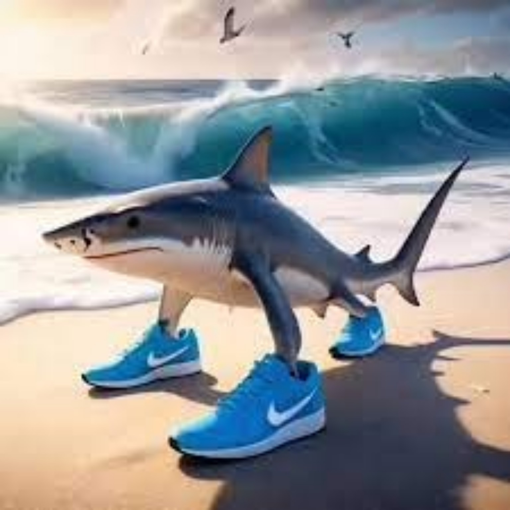
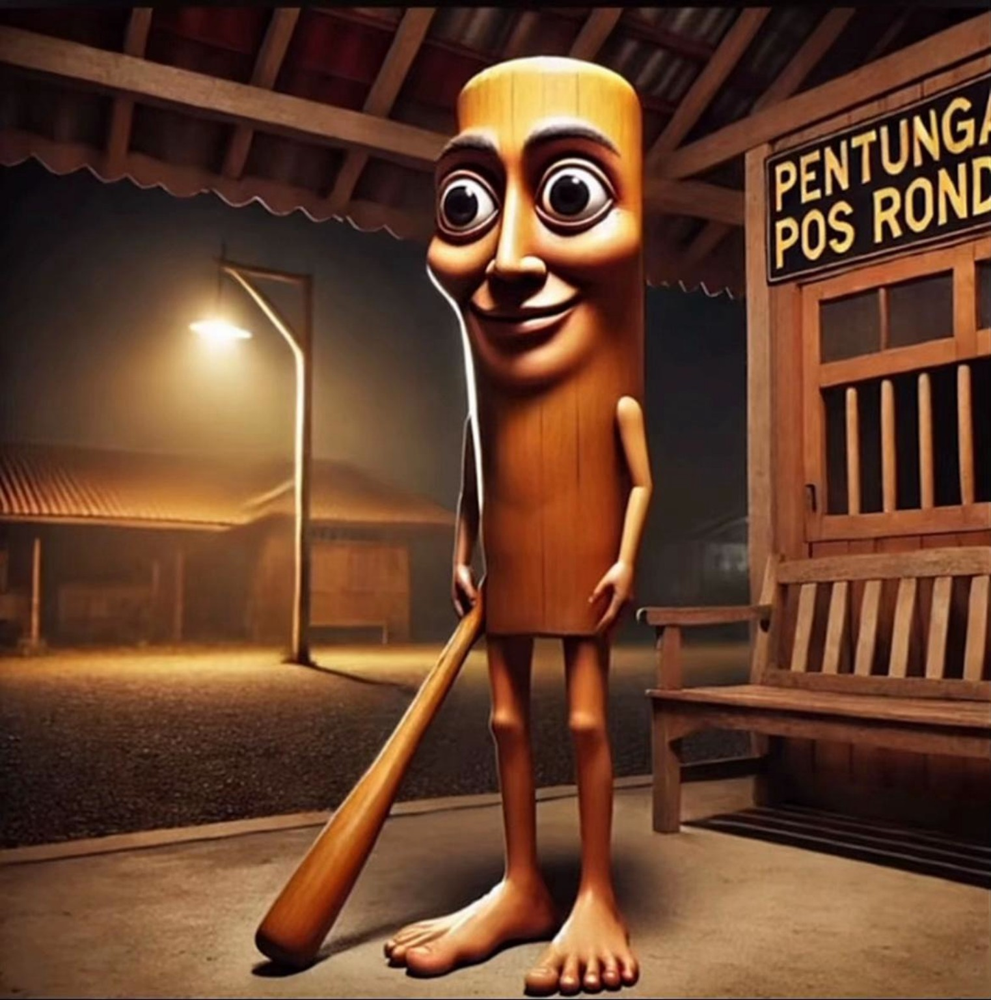
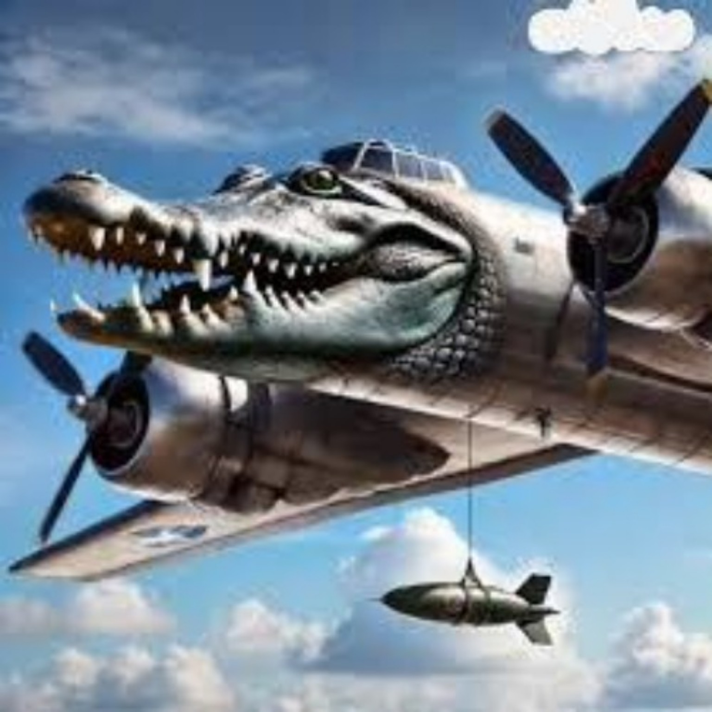
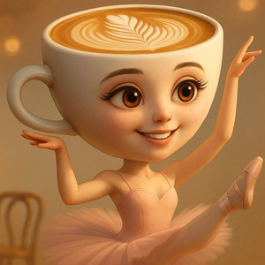
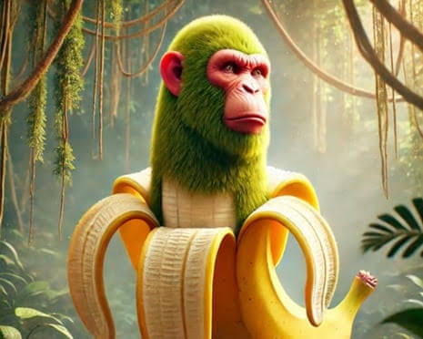
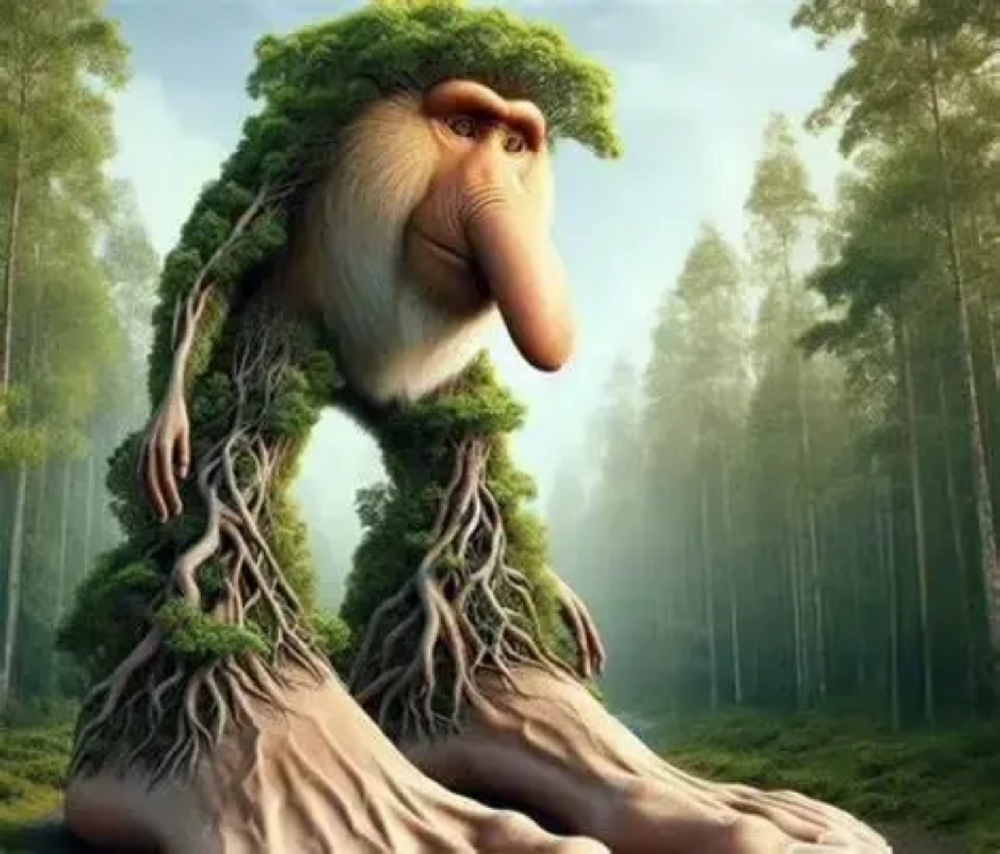
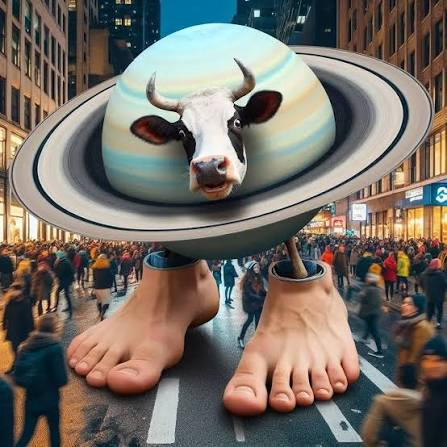
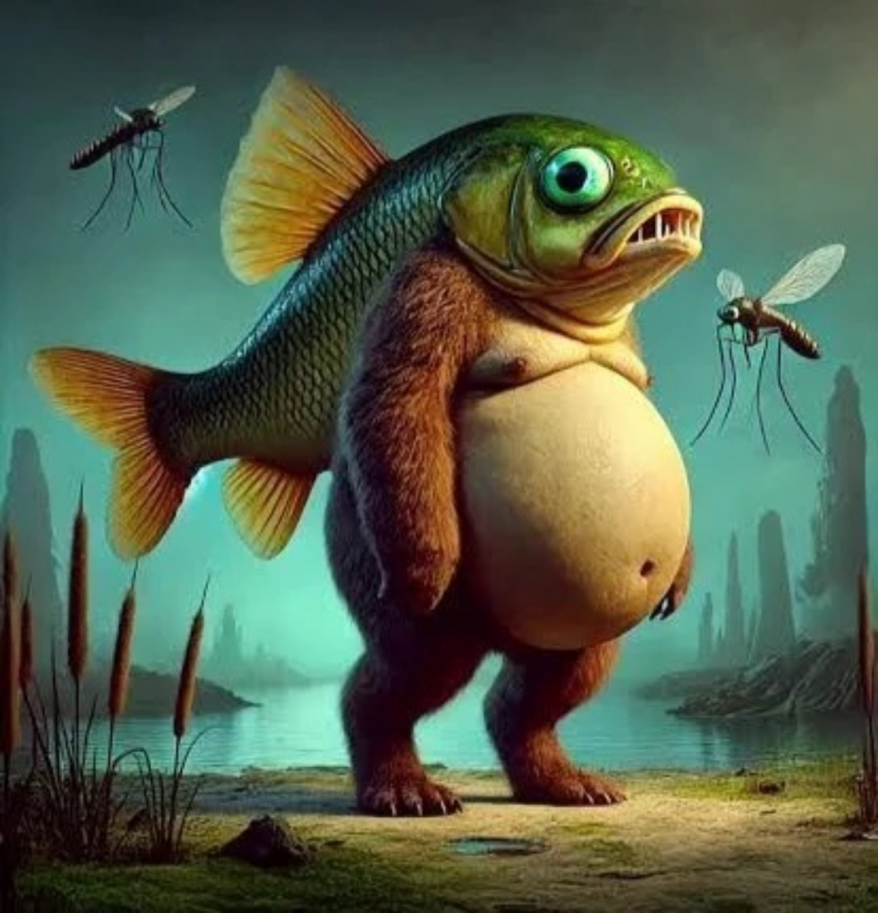
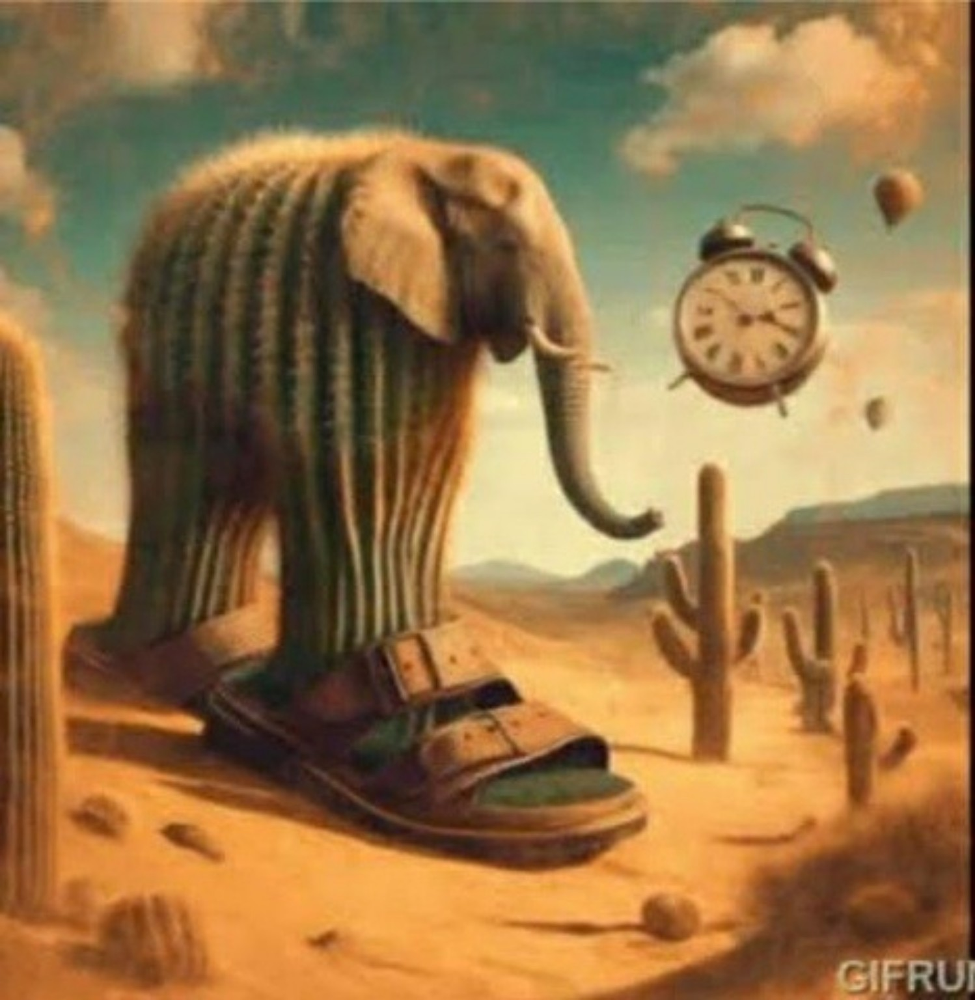
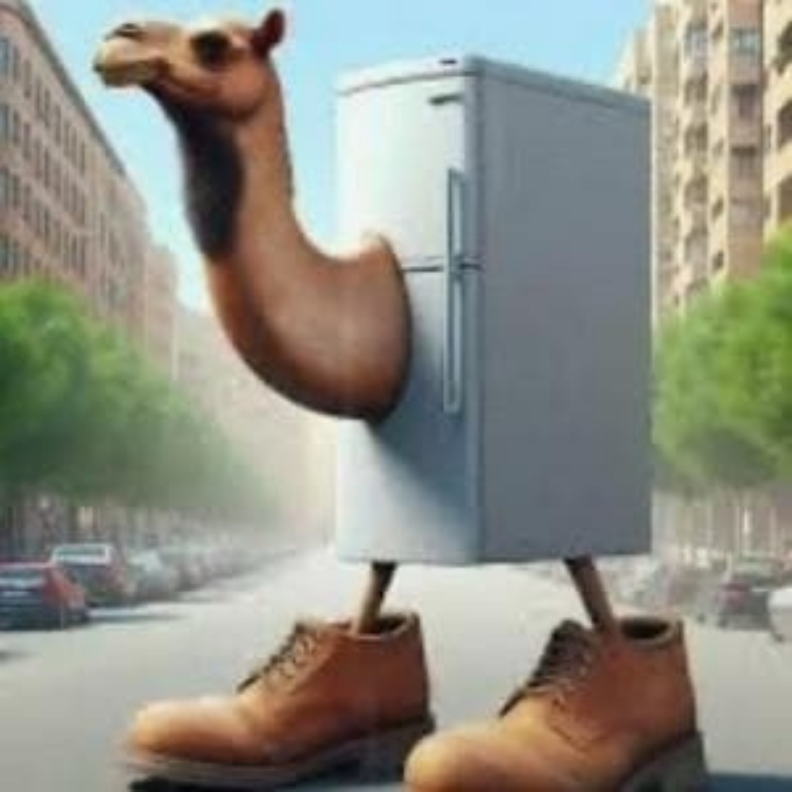

Tralalero Tralala
Um tubarão de três pernas usando tênis, conhecido pelo visual estranho e impossível de esquecer.
Os brainrots são personagens absurdos que ficaram famosos na internet por misturarem animais, objetos e ideias sem sentido. Com nomes estranhos, imagens exageradas e muito humor, eles viraram memes compartilhados por milhões de pessoas nas redes sociais.
Ver personagensConheça alguns dos personagens mais conhecidos desse universo.

Um tubarão de três pernas usando tênis, conhecido pelo visual estranho e impossível de esquecer.

Uma criatura de madeira que carrega um bastão e ficou famosa pelo nome repetitivo e marcante.

Uma mistura absurda entre crocodilo e avião militar, feita para parecer caótica e engraçada.

Uma bailarina com uma xícara de cappuccino no lugar da cabeça, combinando dança e café.

Um chimpanzé misturado com uma banana, criando um personagem simples, estranho e divertido.

Uma criatura de floresta com aparência surreal, conhecida pelo nome sonoro e totalmente nonsense.

Uma vaca com elementos espaciais inspirados em Saturno, misturando fazenda e universo.

Uma criatura híbrida de aparência aquática, criada com a lógica estranha típica dos brainrots.

Um elefante surreal que mistura o animal com uma sandália em uma combinação completamente aleatória.

Um híbrido de geladeira e camelo que representa bem o humor sem lógica desse tipo de meme.